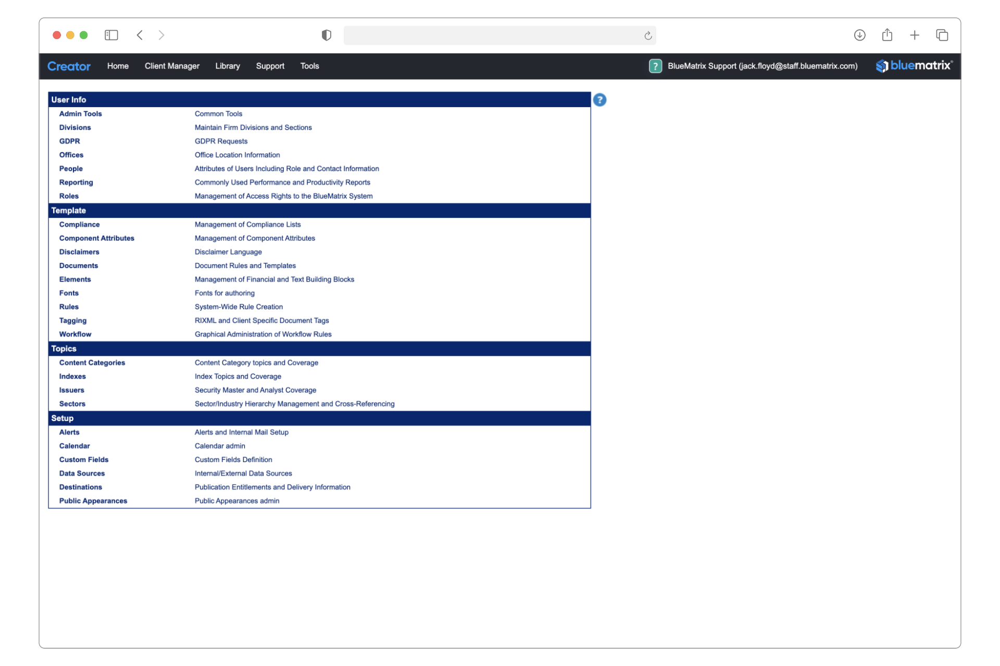
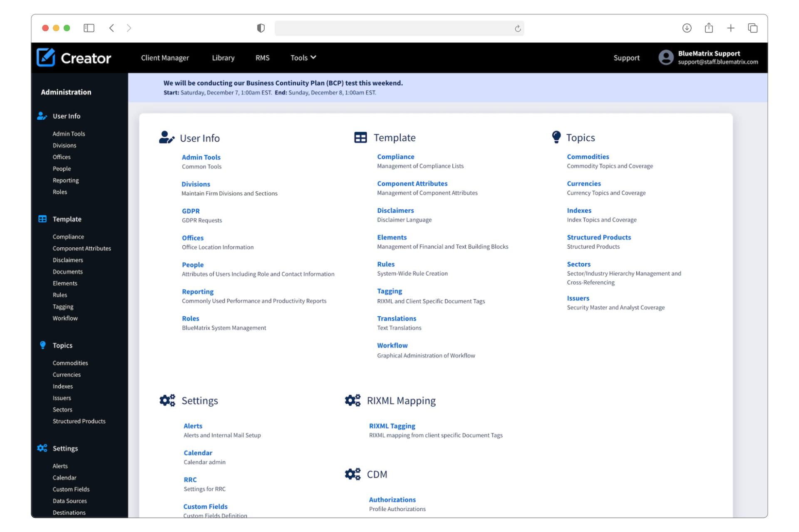
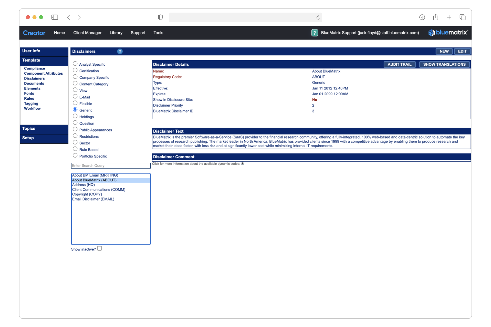
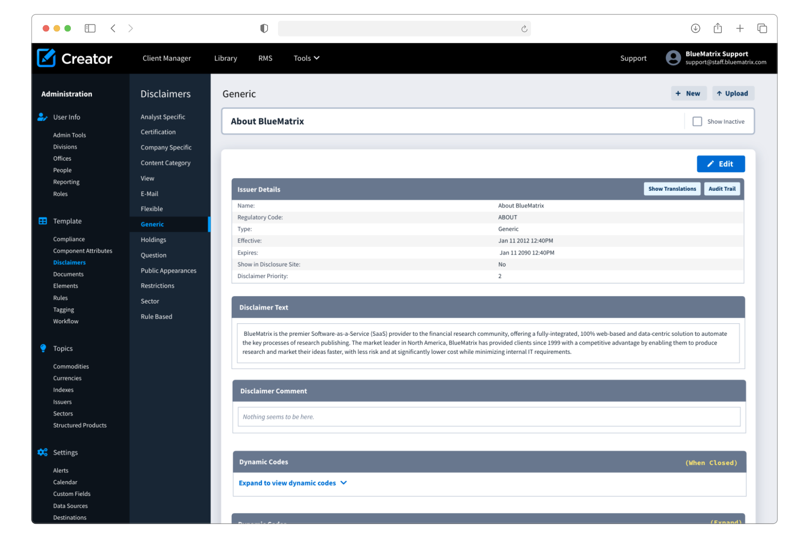
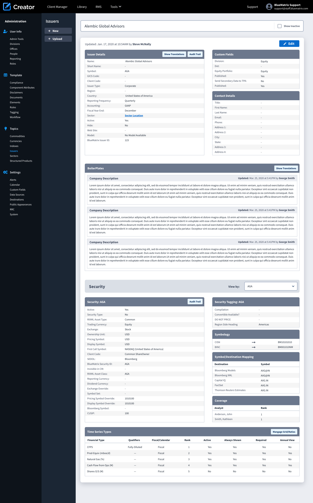
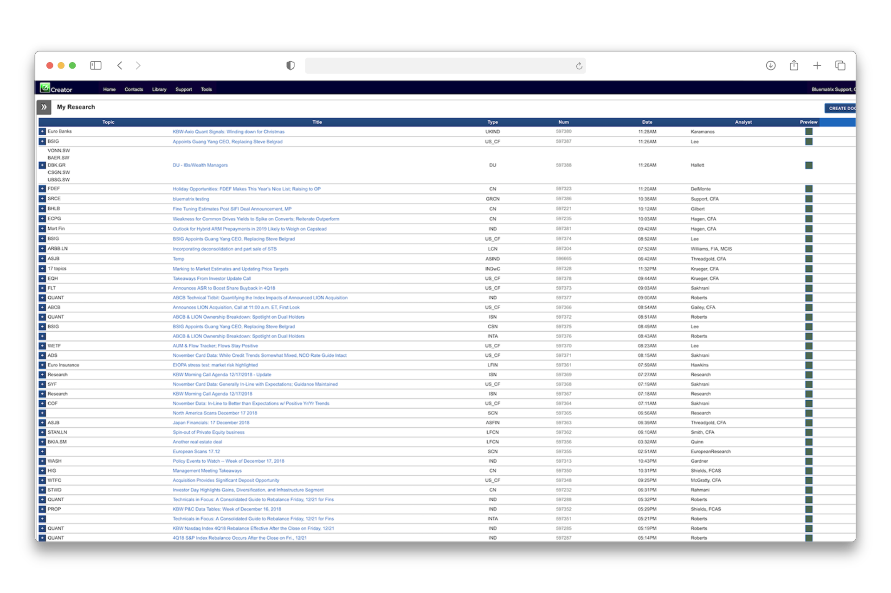
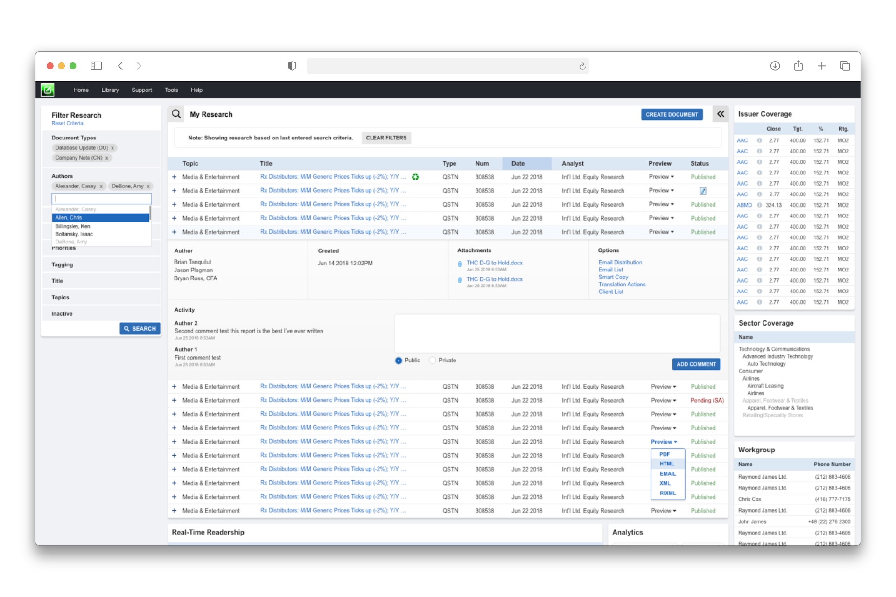

Product redesign
Reimagining the Admin Hub as an intuitive workspace prioritizing key information and structure for effective workflows
- Company
- BlueMatrix
- Role
- Designer
- Tools
-

The goal of this redesign was to modernize an outdated Admin Center and improve user interactions. The focus was on reducing cognitive load, supporting administrative confidence, and making platform configurations more intuitive.
From cluttered interface to intentional, structured design
Before

Buried navigation under competing elements with no clear hierarchy or responsive behavior
After

Reorganized layout with clear information hierarchy, contextual navigation, and responsive behavior.
Before

Editing controls were hidden off-screen with no visual structure to guide the user.
After

Actionable items surfaced in context with a cleaner, more trustworthy aesthetic.
Redesigned issuer configuration screen

Product Reskin
While a full redesign of the author queue wasn't within scope, I led a focused reskin of the interface, partnering closely with product and engineering to deliver a modernized, streamlined UI. The update preserved core functionality while enhancing reliability and strengthening user trust.
Before

Excessive iconography and unstructured whitespace made the interface difficult to scan.
After

Decluttered layout with exposed filter controls and a modular structure for clearer document management.